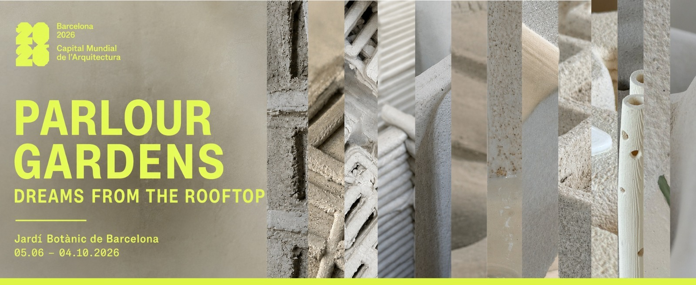

Dreamers
14 Participating Studios

The following teams represent a global network of expertise, selected for their deep connection to the Mediterranean-type climates showcased within the Barcelona Botanical Garden. All fourteen contemporary teams work within Mediterranean or homoclimatic climate regions — a curatorial principle that connects each designer's proposal to the specific ecology of the Botanical Garden where their model will be situated.
Southern Australia
South & West Coast
- Adrian McGregor / McGregor Coxall (Landscape Architecture & Urban Design)
- Peter Stutchbury Architecture (Architecture)
- Phil Harris / Troppo Architects (Architecture)
Africa
The Cape Region
- Gareth Doherty / NUS Critical Landscapes Design Lab Local Community
- Tarna Kilzner / TK Landscape Architecture (Landscape Architecture)
California, USA
- James Corner / Field Operations (Landscape Architecture)
- Adam Greenspan / PWP Landscape Architecture (Landscape Architecture)
- Walter Hood / Hood Design Studio (Landscape Architecture & Public Art)
Mediterranean — North-Western
- Catherine Mosbach (France — Bringing the vision of the French coastline.)
Mediterranean — North-Eastern
- Doxiadis+ (Greece — Architecture and urban design from Athens.)
Mediterranean — South-Western
- Jala Makhzoumi (Lebanon — Landscape architecture and ecology from Beirut.)
- Abdul-Halim Jabr (Egypt — Architecture and urban transformation.)
- Louafi Landschaftsarchitekten (Algeria/Berlin — Landscape artist.)